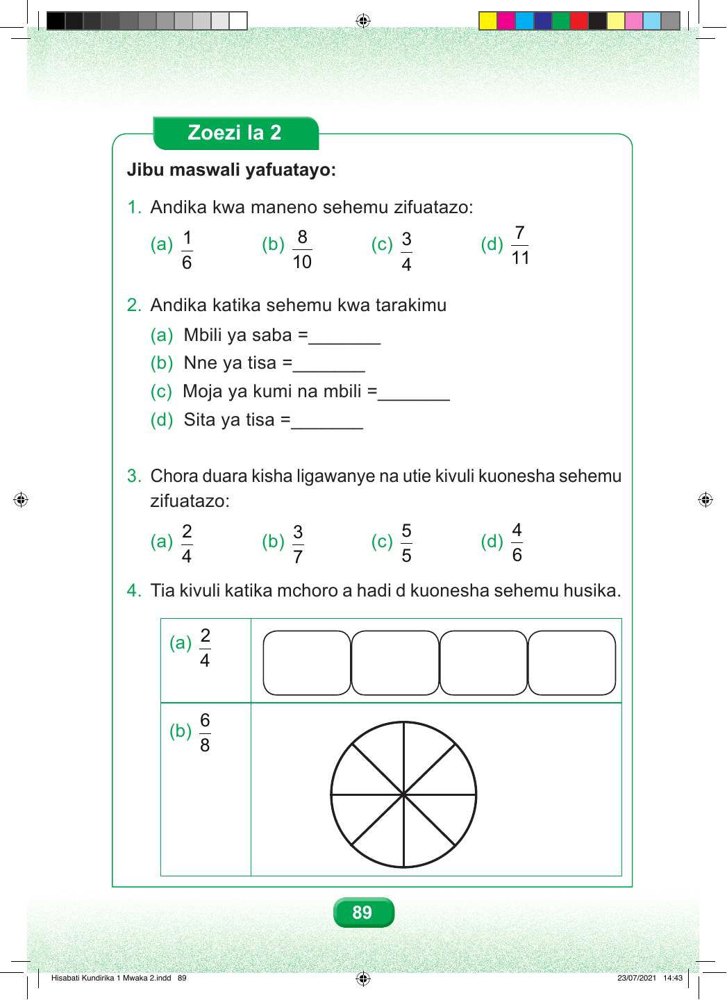

Zoezi la 2 Jibu maswali yafuatayo: 1. Andika kwa maneno sehemu zifuatazo: 7 1 8 3 (a) (b) (c) (d) 11 6 10 4 2. Andika katika sehemu kwa tarakimu (a) Mbili ya saba =_______ (b) Nne ya tisa =_______ (c) Moja ya kumi na mbili =_______ (d) Sita ya tisa =_______ 3. Chora duara kisha ligawanye na utie kivuli kuonesha sehemu zifuatazo: 2 3 5 4 (a) (b) (c) (d) 4 7 5 6 4. Tia kivuli katika mchoro a hadi d kuonesha sehemu husika. 2 (a) 4 6 (b) 8 89 Hisabati Kundirika 1 Mwaka 2.indd 89 23/07/2021 14:43